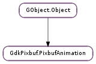

| Subclasses: | GdkPixbuf.PixbufSimpleAnim |
|---|
| static | new_from_file(filename) |
| static | new_from_resource(resource_path) |
| static | new_from_stream(stream, cancellable) |
| static | new_from_stream_async(stream, cancellable, callback, *user_data) |
| static | new_from_stream_finish(async_result) |
| get_height() | |
| get_iter(start_time) | |
| get_static_image() | |
| get_width() | |
| is_static_image() |
None
None
Bases: GObject.Object
An opaque struct representing an animation.
| Parameters: | filename (str) – Name of file to load, in the GLib file name encoding |
|---|---|
| Raises: | GLib.GError |
| Returns: | A newly-created animation with a reference count of 1, or None if any of several error conditions ocurred: the file could not be opened, there was no loader for the file’s format, there was not enough memory to allocate the image buffer, or the image file contained invalid data. |
| Return type: | GdkPixbuf.PixbufAnimation |
Creates a new animation by loading it from a file. The file format is detected automatically. If the file’s format does not support multi-frame images, then an animation with a single frame will be created. Possible errors are in the #GDK_PIXBUF_ERROR and #G_FILE_ERROR domains.
| Parameters: | resource_path (str) – the path of the resource file |
|---|---|
| Raises: | GLib.GError |
| Returns: | A newly-created animation, or None if any of several error conditions occurred: the file could not be opened, the image format is not supported, there was not enough memory to allocate the image buffer, the stream contained invalid data, or the operation was cancelled. |
| Return type: | GdkPixbuf.PixbufAnimation |
Creates a new pixbuf animation by loading an image from an resource.
The file format is detected automatically. If None is returned, then error will be set.
| Parameters: |
|
|---|---|
| Raises: | |
| Returns: | A newly-created pixbuf, or None if any of several error conditions occurred: the file could not be opened, the image format is not supported, there was not enough memory to allocate the image buffer, the stream contained invalid data, or the operation was cancelled. |
| Return type: |
Creates a new animation by loading it from an input stream.
The file format is detected automatically. If None is returned, then error will be set. The cancellable can be used to abort the operation from another thread. If the operation was cancelled, the error Gio.IOErrorEnum.CANCELLED will be returned. Other possible errors are in the #GDK_PIXBUF_ERROR and %G_IO_ERROR domains.
The stream is not closed.
| Parameters: |
|
|---|
Creates a new animation by asynchronously loading an image from an input stream.
For more details see GdkPixbuf.Pixbuf.new_from_stream (), which is the synchronous version of this function.
When the operation is finished, callback will be called in the main thread. You can then call GdkPixbuf.PixbufAnimation.new_from_stream_finish () to get the result of the operation.
| Parameters: | async_result (Gio.AsyncResult) – a Gio.AsyncResult |
|---|---|
| Raises: | GLib.GError |
| Returns: | a GdkPixbuf.PixbufAnimation or None on error. Free the returned object with GObject.Object.unref (). |
| Return type: | GdkPixbuf.PixbufAnimation |
Finishes an asynchronous pixbuf animation creation operation started with GdkPixbuf.PixbufAnimation.new_from_stream_async ().
| Returns: | Height of the bounding box of the animation. |
|---|---|
| Return type: | int |
Queries the height of the bounding box of a pixbuf animation.
| Parameters: | start_time (GLib.TimeVal or None) – time when the animation starts playing |
|---|---|
| Returns: | an iterator to move over the animation |
| Return type: | GdkPixbuf.PixbufAnimationIter |
Get an iterator for displaying an animation. The iterator provides the frames that should be displayed at a given time. It should be freed after use with GObject.Object.unref ().
start_time would normally come from GLib.get_current_time (), and marks the beginning of animation playback. After creating an iterator, you should immediately display the pixbuf returned by GdkPixbuf.PixbufAnimationIter.get_pixbuf (). Then, you should install a timeout (with GLib.timeout_add ()) or by some other mechanism ensure that you’ll update the image after GdkPixbuf.PixbufAnimationIter.get_delay_time () milliseconds. Each time the image is updated, you should reinstall the timeout with the new, possibly-changed delay time.
As a shortcut, if start_time is None, the result of GLib.get_current_time () will be used automatically.
To update the image (i.e. possibly change the result of GdkPixbuf.PixbufAnimationIter.get_pixbuf () to a new frame of the animation), call GdkPixbuf.PixbufAnimationIter.advance ().
If you’re using GdkPixbuf.PixbufLoader, in addition to updating the image after the delay time, you should also update it whenever you receive the area_updated signal and GdkPixbuf.PixbufAnimationIter.on_currently_loading_frame () returns True. In this case, the frame currently being fed into the loader has received new data, so needs to be refreshed. The delay time for a frame may also be modified after an area_updated signal, for example if the delay time for a frame is encoded in the data after the frame itself. So your timeout should be reinstalled after any area_updated signal.
A delay time of -1 is possible, indicating “infinite.”
| Returns: | unanimated image representing the animation |
|---|---|
| Return type: | GdkPixbuf.Pixbuf |
If an animation is really just a plain image (has only one frame), this function returns that image. If the animation is an animation, this function returns a reasonable thing to display as a static unanimated image, which might be the first frame, or something more sophisticated. If an animation hasn’t loaded any frames yet, this function will return None.
| Returns: | Width of the bounding box of the animation. |
|---|---|
| Return type: | int |
Queries the width of the bounding box of a pixbuf animation.
| Returns: | True if the “animation” was really just an image |
|---|---|
| Return type: | bool |
If you load a file with GdkPixbuf.PixbufAnimation.new_from_file () and it turns out to be a plain, unanimated image, then this function will return True. Use GdkPixbuf.PixbufAnimation.get_static_image () to retrieve the image.